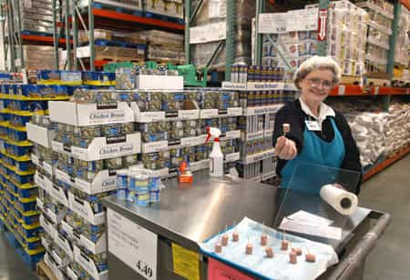
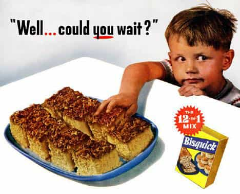

Emmanuel is a pompous git who enjoys the company of girly mistresses, spirited men, endless buffets and luxurious clothes. He can be found on Twitter at @Goldsteineum.


It’s become popular of late to castigate ‘nice guys’ as evil, manipulative monsters. That dude wearing dorky glasses and a sweater, trying to be your friend? He’s practically a rapist, but without the balls to do it. Otherwise sensible men chime in to agree with the women lobbing these charges. Nice guys, in fact, are a lot less malevolent than these harridans and gullible players believe. ‘Nice guys’ are accused of pretending to want friendships when they really only want sex. In reality, these men are just not sexually assertive, and aren’t quick to make their intentions clear. The girl, after all, shows some interest in him as a person, so he figures, well, if only I give her some time to see what a great person I am, she will show some sexual interest in me. After all, what’s the rush?
Nice guys think girls choose men like people buy houses – the prospective home buyer opens the newspaper and looks at the houses available houses on sale, and methodically chooses a house suited for her tastes and needs. While a few choose a house rashly, most are smart about it. It’s a decision made after much consideration and planning.
Players meanwhile are more like that sweet old lady with saggy arms wearing a hairnet at your local supermarket, handing out free, tasty samples. You’re not even looking at her, and she beckons you over to have a taste. Even though it’s junk food, you can’t resist. You avoid sweets, and here you are eating a tiny cinnabon. And really, she won’t mind if you take just the tip taste.

Regardless, minutes later, you’re going home with a 96-pack of cinnabons – and you don’t even eat pastries! To be completely honest, the first time it happens, you’re a little jarred and confused about how the whole thing went down so fast. As time goes on, you come to accept these periodic ‘mistakes.’ You start buying the cinnabons unprompted.
Now, imagine that that sweet old lady is actually a funny, strapping young man, and you buying those cinnabons is a woman agreeing to sex with him the night she met him. That confusion you felt after you bought a huge package of junk food? That’s how a girl might feel after her first one-night stand. If you remain unconvinced, just remember that our economy is in shambles because tens of millions of people bought homes they cannot afford, and that half of us are comically obese from eating too much junk food. That granny sample lady is looking pretty formidable right now.

Instant Gratification
The bigger a purchase is, and the more rarely we make it, the more cautious we’ll be about choosing it. We’ll spend more time looking over the options, and think about which one is really best for our long term health and happiness. For women in America, deciding who to have sex with has gone from being a big infrequent ‘purchase’ to a frequent small one. Before, it might have coincided with the man she would marry or at least seriously date. Having sex meant she was agreeing to be with him for the long haul, so she wouldn’t choose just anyone. If she slept with him outside of a relationship, and people found out, her whore score would rocket upwards.
Nowadays, it’s just about the man who can tickle her taste buds, right now. And women definitely do not want what the nice guy is selling. While a woman was often tempted to have sex outside the confine of a serious relationship, a patriarchal social order made the restraint of female sexuality its highest priority. Single men and women had fewer opportunities to interact as platonic friends, and women would spend less time single and get married sooner. A woman hanging out with a man when she already had a boyfriend or husband was more likely to attract scrutiny. The men who would be ‘nice guys’ had much less opportunity to get into the rut they do now, where they pathetically cling to women who hardly notice them. With the lifting of all those restraints, a woman’s choice of who to sleep with became as trivial as her choice of meat for dinner.

To a player, every flash of excitement and gale of laughter from the girl is like an army general commanding “ADVANCE, SOLDIER!” In an environment where pre-marital sex doesn’t happen, and fathers ensure their daughters don’t have sex, the player may have to settle for girls who are pariahs, or give up quick sex altogether. No wonder then that a player’s first concern is always ‘Is she DTF?’
Both players and ‘nice guys’ are using sexual strategies, and each have their time and place. But the ‘nice guy’ strategy just isn’t cut out for a society where women have sex outside committed relationships, for a nation where instant gratification has made us uproariously fat.
When looking at the world of sex and relationships, it’s valuable to look at things as an evolutionary biologist would; instead of initially castigating something as wrong or unmanly, assume that everything you see is potentially useful, even if you can’t understand why people are doing it. Ask yourself, ‘why does this exist?’ The behavior may have effectively served some purpose in the past, and now it’s just a relic of that former time.
The ‘nice guy’ is a simply a holdover from a patriarchal civilized past, where male romantic commitment was rewarded with sex, and female promiscuity was limited. The ‘nice guy’ was also more limited in how much time he could spend with a woman in the past – society was more sexually segregated, and eligible women would spend more time in relationships. While they were probably every bit as attracted to ‘bad boys’ and cads back then, choosing them was difficult or impossible.
Given how women are opting to have sex quickly and incautiously nowadays, being a ‘nice guy’ is about as useful as keeping your wisdom teeth when they’re causing you pain – it’s just retarded. If you want to avoid the pain and enjoy life, it’s time to throw out those proverbial wisdom teeth, and man up. If you find yourself doing something for a woman that you wouldn’t for a man, and you aren’t banging her, it’s time to let that one go and throw it back into the sea.
To the Machiavels out there, your time has come.
Don’t Miss: All Girls Like Muscular Guys